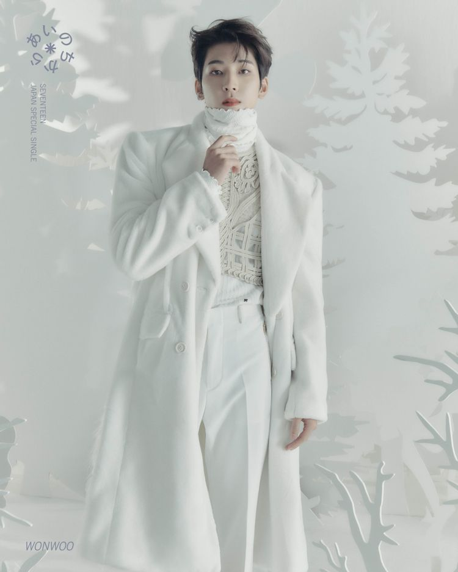

- 정한
- 원우
- 호시
원우

세븐틴의 가장 낮은 목소리, 원우입니다.
나무위키로 이동
대한민국의 13인조 보이그룹 세븐틴의 멤버. 힙합팀 소속이며 래퍼 포지션을 맡고 있다.
중학생 시절, 막연히 기타를 배우고 싶다는 생각에 취미 삼아 친구와 실용음악학원을 다녔었다.
그런데 플레디스엔터테인먼트가 그곳에서 우연히 공개 오디션을 개최했고, 단순히 경험 삼아 참가했다가 덜컥 합격해 2011년 11월 플레디스엔터테인먼트에서 연습생 생활을 시작한다.
공개 오디션을 보고 입사한 세 멤버 중 한 명으로 약 3년 6개월간의 오랜 연습생 기간을 보냈으며, 아울러 세븐틴 멤버 중 다섯 번째로 연습 기간이 길었던 멤버이기도 하다.
각종 선배 그룹들의 뮤직비디오에 출연하거나 백댄서로 무대에 올라 데뷔 전부터 조금씩 얼굴을 비추어왔다.
팀 이름도 17에 생일도 17일이라 데뷔 초 "태생부터 세븐틴"이라며 자기소개를 한 적이 있다.